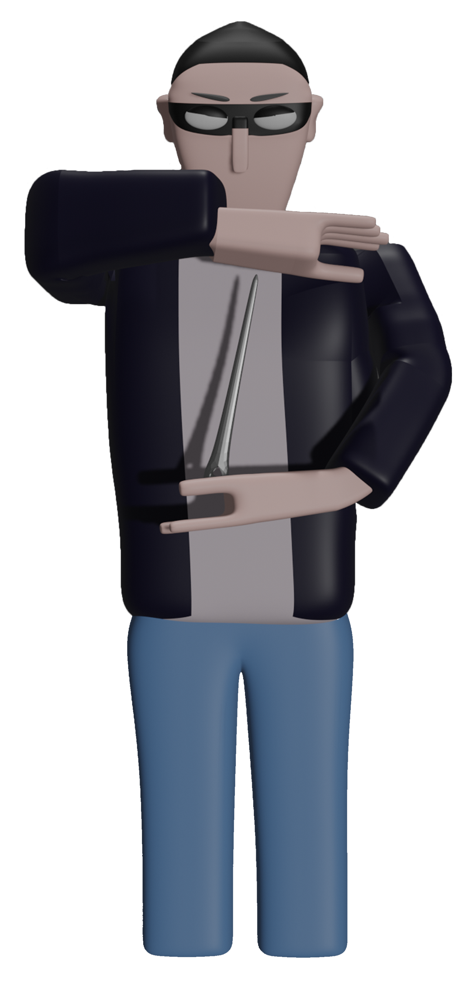

O aumento do crime pelas ruas da cidade provocou um grave acidente na vida de um mero costureiro. Após perder as pernas e revoltado com o mundo decide acabar com a criminalidade na cidade!
Coloca uma máscara, agarra no saco de agulhas e sai
à rua determinado a colocar um fim em todos os criminosos!
Conseguirá um simples costureiro levar a fim tamanha missão?

Torna-te parte do herói e ajuda a acabar com o crime da cidadeTorna-te parte do herói e ajuda a acabar com o crime da cidadeTorna-te parte do herói e ajuda a acabar com o crime da cidadeTorna-te parte do herói e ajuda a acabar com o crime da cidadeTorna-te parte do herói e ajuda a acabar com o crime da cidadeTorna-te parte do herói e ajuda a acabar com o crime da cidade